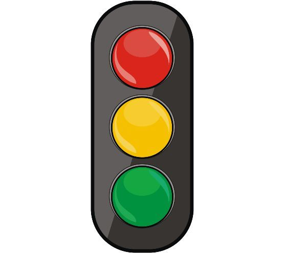
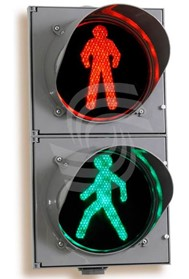

Светофор - это сигнальный электрический фонарь с красными, жёлтыми и зелёными стеклами для регулирования движения на улицах и дорогах.

Рисунок 1 - Внешний вид светофора
В светофоре три сигнала. Красный сигнал светофора находится на самом верху и обозначает, что лучше остановить движение. Это запрещающий сигнал светофора.
Жёлтый сигнал находится в середине. Он тоже запрещающий и предупреждает о смене сигнала либо с жёлтого на зелёный, либо с жёлтого на красный.
Зелёный сигнал светофора находится в самом низу и обозначает, что движение разрешено.
Есть ещё специальный светофор с двумя сигналами, который отличается от обычного светофора тем, что в нём нет жёлтого сигнала, а также, людьми, которые изображены на этом светофоре. В остальном особых отличий нет.

Рисунок 2 - Внешний вид светофора с двумя сигналами